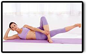
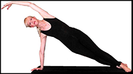

Pilates
It is an intensive core conditioning exercise that places a lot of strain on the abdominal muscles. Hence, it is best to perform Pilates on a fairly empty stomach. It is also about balancing the body and the mind. Practicing Pilates makes your mind more aware of your bodies needs.
It is the workout to turn to for a flat tummy. A 2008 study found that Pilates mat exercises engage and strengthen the deeper ab muscles responsible for a sleek, flat stomach. But Pilates isn’t just about whittling your waistline: It can also give you exceptional whole-body toning and graceful posture, plus make your daily activities (like hoisting groceries) easier to do.
DO's
- Do Pace Yourself Based on How You Feel
- Be Choosey About Your Equipment
- Cool Down Gradually
- Set Appropriate Goals
- Eat Before
- Increase Exercise Level Gradually
- Perform a Warm-Up Before Your Workout
- Exercise Regularly Throughout the Week

DONT’s
- Don't Do Exercises that Hurt Your Body
- Get Hung Up on Heart Rate
- Skip Your Warm-up
- Perform the Same Workout Everyday
- Overdo It As You Start Your Program
- Go From 0 to 60 in 5 Seconds
- Stop Immediately After a Vigorous Workout
Foods rich in complex carbohydrates and lean proteins are a good choice in a Pilates diet as they will provide you with the energy necessary to perform your Pilates routine. It is also essential to keep the body hydrated while working out.
One of the best methods of ensuring that you retain sufficient energy to see you through your Pilates workout regimen is to drink a high protein shake one to two hours before your workout. Blend two teaspoons of your favorite protein supplement with fruits such as berries, apples, cherries or pears that have a low glycemic index.
Downing protein in liquid form a couple of hours before your workout ensures that your stomach is not full and bloated, so that you can carry out your Pilates bodywork with ease. At the same time it ensures that your body has an adequate supply of energy to help you carry out you Pilates routines properly.